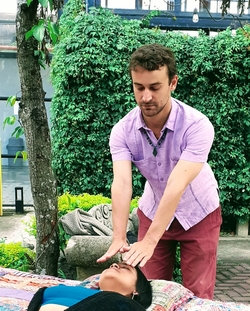

La salud es integridad del cuerpo, alma y espíritu. Si estamos en balance, estamos sanos.
La verdad es que la solución está en ti. Tu puedes sanar solo y la verdad es que solu tú puedes sanar, nadie más puede hacerlo por ti.
Jakub pasó muchos años investigando sabiduría ancestral de antigua India, China y Japón.
A través de su dedicación se le abrió conexión con Dios sin esperarlo y estaba recibiendo guíanza divina desde entonces.
Desde allí Jakub desarrolló el don de sanar con energía lo que está practicando hasta el día de hoy.